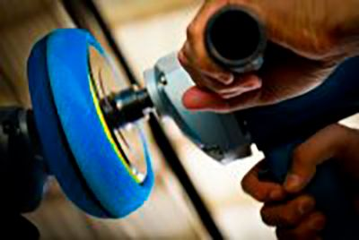

Professional car detailing is the art and the craft of cleaning and restoring a vehicle to like-new condition. Car detailing services are much more precise and labor-intensive than getting a car wash. A car wash is normally an automated system that a car passes through to clean the exterior. Professional auto detailing is always done by hand, and includes exterior and interior car detailing services.
Exterior wash and dry - This washing and drying process is done by hand. The detailer will spray and wipe down the body of the car with specialized products. This includes hand washing the rims, door handles, and glass. Paint Claying - A clay bar is used to remove any contaminants, overspray, or residue left after the car has been washed. Claying results in a cleaner and smoother surface, and helps increase the effectiveness of polish and wax. Polishing - Polishing buffs an abrasive compound onto the cars paint to remove small layers of clear coat. This makes small scratches and swirls in the paint disappear. Sealing or Waxing - To give the car a glossy shine and to add a protective layer to the cars paint, a sealant is applied. In some cases, wax can be used